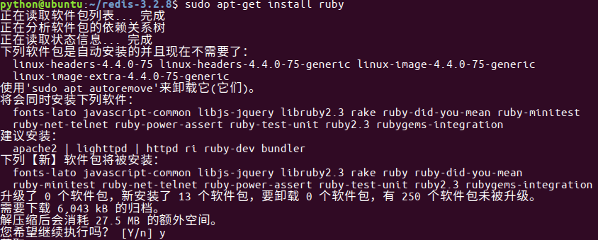
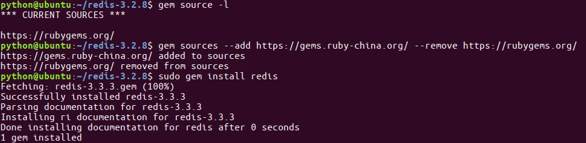
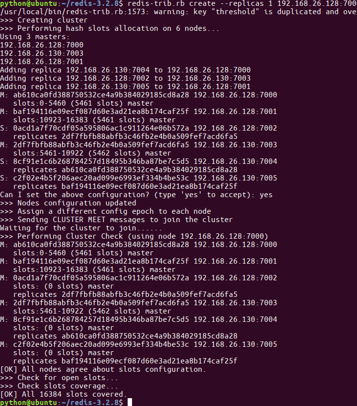
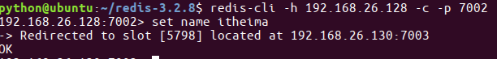
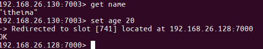

创建集群
- redis的安装包中包含了redis-trib.rb，⽤于创建集群
- 接下来的操作在172.16.179.130机器上进⾏
将命令复制，这样可以在任何⽬录下调⽤此命令
sudo cp /usr/share/doc/redis-tools/examples/redis-trib.rb /usr/local/bin/安装ruby环境，因为redis-trib.rb是⽤ruby开发的
sudo apt-get install ruby
在提示信息处输⼊y，然后回⻋继续安装 
运⾏如下命令创建集群
redis-trib.rb create --replicas 1 172.16.179.130:7000 172.16.179.130:7001 172.16.179.130:7002 172.16.179.131:7003 172.16.179.131:7004 172.16.179.131:7005天朝的防⽕墙导致⽆法下载最新版本,所以需要设置 gem 的源
解决办法如下
-- 先查看⾃⼰的 gem 源是什么地址 gem source -l -- 如果是https://rubygems.org/ 就需要更换 -- 更换指令为 gem sources --add https://gems.ruby-china.org/ --remove https://rubygems.org/ -- 通过 gem 安装 redis 的相关依赖 sudo gem install redis -- 然后重新执⾏指令
redis-trib.rb create --replicas 1 172.16.179.130:7000 172.16.179.130:7001 172.16.179.130:7002 172.16.179.131:7003 172.16.179.131:7004 172.16.179.131:7005提示如下主从信息，输⼊yes后回⻋ 
提示完成，集群搭建成功
{kind=link}
数据验证
- 根据上图可以看出，当前搭建的主服务器为7000、7001、7003，对应的从服务器是7004、7005、7002
在172.16.179.131机器上连接7002，加参数-c表示连接到集群
redis-cli -h 172.16.179.131 -c -p 7002
写⼊数据
set name itheima
⾃动跳到了7003服务器，并写⼊数据成功 
- 在7003可以获取数据，如果写入数据又重定向到7000(负载均衡) 
在哪个服务器上写数据：CRC16
- redis cluster在设计的时候，就考虑到了去中⼼化，去中间件，也就是说，集群中 的每个节点都是平等的关系，都是对等的，每个节点都保存各⾃的数据和整个集 群的状态。每个节点都和其他所有节点连接，⽽且这些连接保持活跃，这样就保 证了我们只需要连接集群中的任意⼀个节点，就可以获取到其他节点的数据
- Redis集群没有并使⽤传统的⼀致性哈希来分配数据，⽽是采⽤另外⼀种叫做哈希 槽 (hash slot)的⽅式来分配的。redis cluster 默认分配了 16384 个slot，当我们 set⼀个key 时，会⽤CRC16算法来取模得到所属的slot，然后将这个key 分到哈 希槽区间的节点上，具体算法就是：CRC16(key) % 16384。所以我们在测试的 时候看到set 和 get 的时候，直接跳转到了7000端⼝的节点
- Redis 集群会把数据存在⼀个 master 节点，然后在这个 master 和其对应的salve 之间进⾏数据同步。当读取数据时，也根据⼀致性哈希算法到对应的 master 节 点获取数据。只有当⼀个master 挂掉之后，才会启动⼀个对应的 salve 节点，充 当 master
- 需要注意的是：必须要3个或以上的主节点，否则在创建集群时会失败，并且当存 活的主节点数⼩于总节点数的⼀半时，整个集群就⽆法提供服务了